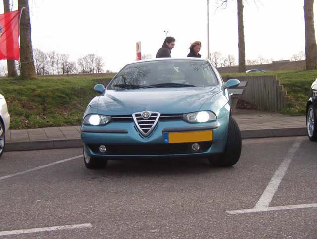
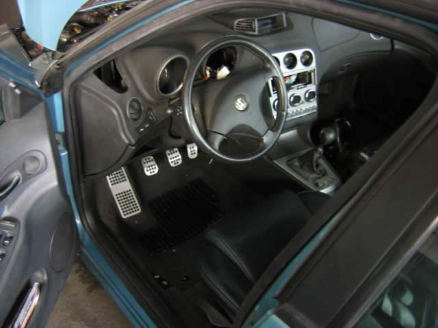
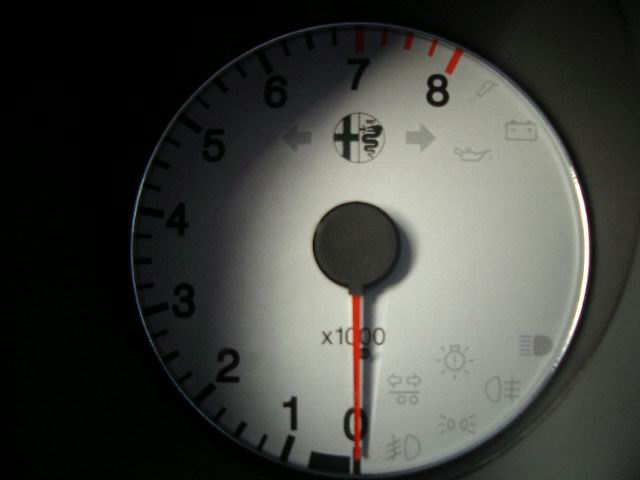
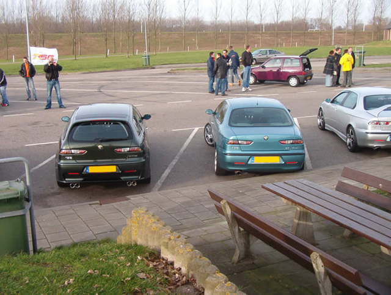
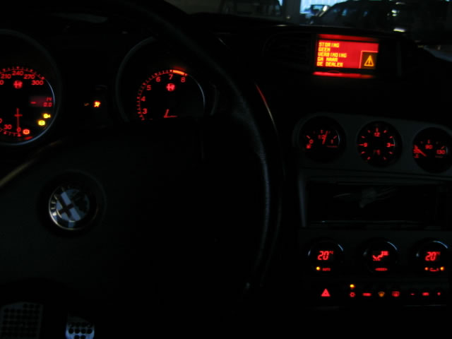

Dave Schaefers, located in Amsterdam, The Netherlands.
1998 2.5V6 24V
Interior:
2002 GTA dashboard with working boardcomputer and GTA (300 km/h) gauges. And 2002 steering wheel
Exterior:
Homemade GTA headlights with aftermarked Xenon 6000K, lexus tail lights, 5-hole GTA rims with 215/45/ZR17 F1 rubber
Future plans:
GTA bumpers, skirts and Remus exhaust.
Long term planning involves installing a revised 3.0V6 166 engine along with additional tuning.
Brembo 4 caliper brakes and last but not least sports suspension.
Submitted: 2005




![[Prev]](bw_prev.gif)
![[Index]](bw_index.gif)
![[Next]](bw_next.gif)